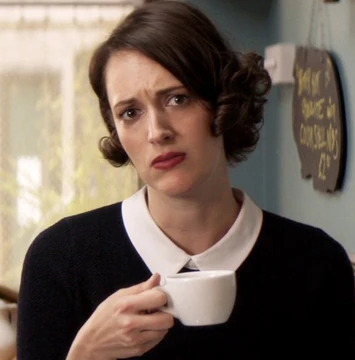
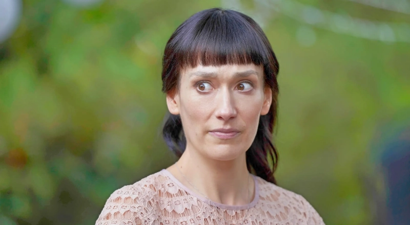

Fleabag
Fleabag, Londra'da yaşayan ve hayatındaki zorluklarla mizahi bir dille başa çıkmaya çalışan bir kadının hikayesini anlatır. Dizi, dördüncü duvarı yıkarak izleyiciyle doğrudan iletişim kurmasıyla ünlüdür.
Ana Karakterler

Fleabag
Dizinin baş karakteri, mizahi ve karmaşık bir kişiliğe sahip.
Rahip
Fleabag'in hayatına giren gizemli ve çekici rahip.

Claire
Fleabag'in gergin ve mükemmeliyetçi kız kardeşi.
Favori Sahne
Fleabag ve Rahip'in vedası...
Bölümler
| Bölüm No | Başlık | Açıklama |
|---|---|---|
| 1 | 1. Bölüm | Fleabag, bir banka soygununa karışır ve hayatı altüst olur. |
| 2 | 2. Bölüm | Fleabag, kız kardeşinin nişan partisinde olay çıkarır. |
| 3 | 3. Bölüm | Fleabag, bir terapistle yüzleşir ve geçmişiyle hesaplaşır. |
| 4 | 4. Bölüm | Fleabag, Rahip ile karmaşık bir ilişkiye başlar. |
| 5 | 5. Bölüm | Fleabag, ailesiyle yüzleşir ve hayatına dair önemli kararlar alır. |